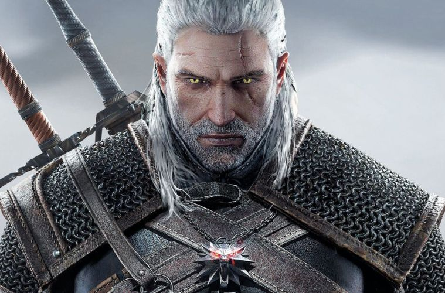

THE WITCHER 3, MIS DOS PERSONAJES FAVORITOS
Geralt de Rivia fue un legendario brujo de la Escuela del Lobo, activo durante el siglo XIII. Amaba a la hechicera Yennefer, a pesar de su tumultuosa relación, y era el padre adoptivo de Ciri.
Como todos los brujos, Geralt era un cazador de monstruos a sueldo. Poseía habilidades sobrehumanas y era un maestro espadachín. Durante la Prueba de las Hierbas, Geralt exhibió una tolerancia inusual a los mutágenos que concedían a los brujos sus habilidades. Por lo tanto, Geralt fue expuesto a otros experimentos más fuertes, que le concedieron el pelo blanco, dándole mayor velocidad, fuerza y resistencia que sus compañeros brujos.
Geralt también era conocido como Gwynbleidd en la Lengua Élfica (traducido quiere decir "Lobo Blanco"). Este apodo fue dado por las dríadas. También era conocido como "Carnicero de Blaviken" por un desafortunado hecho ocurrido en tal ciudad.
A pesar de su nombre, Geralt no procedía de la ciudad de Rivia. Después de que Visenna, su madre, lo dejara, éste creció en Kaer Morhen en el reino de Kaedwen, bajo la tutela de los brujos de la Escuela del Lobo. Para que los potenciales clientes de los brujos tuvieran confianza en ellos, el maestro Vesemir animó a los nuevos brujos a que eligieran un apellido. Como primera opción, Geralt optó por "Geralt Roger Eric du Haute-Bellegarde", pero esta opción fue rechazada por Vesemir, la que calificó como tonta y pretenciosa. "De Rivia" era la opción más práctica. Geralt se tomó muy en serio este título, tanto que su tono de voz y acento eran como alguien de Rivia. Tiempo después, la reina Meve de Lyria lo nombró Caballero por su valor en la Batalla del Puente, otorgándole el título formal "De Rivia".
La mayoría de las veces se muestra como alguien apático, cínico y amenazante. A pesar de su naturaleza fría, Jaskier señala que en el interior se esconde un amigo leal y un hombre con un gran humor, y como alguien que no se muestra indiferente ante el sufrimiento de los demás. En los libros y juegos, Geralt se muestra como una persona de muchos amigos a lo largo de los Reinos del Norte, tales como Zoltan Chivay, Caldemeyn, y por supuesto Jaskier. Es muy protector y leal con sus compañeros y amigos, y está dispuesto a realizar grandes hazañas por aquellos que le importan. Puede ser muy bondadoso y cuidar a la gente que ama.

PLATAFORMAS EN LAS QUE ESTÁ DISPONIBLE
PS4

XBOX ONE

PC